CS184/284A Spring 2025 Homework 3 Write-Up
Link to webpage: https://cal-cs184-student.github.io/hw-webpages-grampur-coder/hw3/index.html
Link to GitHub repository: https://github.com/grampur-coder/hw3-for-now

Overview
Give a high-level overview of what you implemented in this homework. Think about what you've built as a whole. Share your thoughts on what interesting things you've learned from completing the homework.Part 1: Ray Generation and Scene Intersection
So, for the first part of the project, I had to figure out how to actually "see" the scene. The ray generation part is basically about taking a pixel on your screen and turning it into a 3D ray that shoots out into the world. You start with the x and y coordinates of a pixel, normalize them so they're between 0 and 1, and then move them into "camera space."
In camera space, the camera is at (0,0,0) and looking down the -Z axis. I used the field of view (hFov and vFov) to scale the sensor plane so the rays spread out correctly. Once I have the direction in camera space, I multiply it by the c2w matrix to get it into world space. This was a bit tricky because you have to make sure the origin of the ray is the actual camera position in the world, and that the direction vector is normalized or else the intersection math gets all weird later.
Triangle Intersection Algorithm
To actually hit stuff in the scene, I implemented the moller-Trumbore algorithm for the triangles. It's cool because it doesn't make you solve for the plane equation first which saves a lot of work. Basically, it uses some vector math to solve for the time t and the barycentric coordinates u and v all at once.
If the t value is between the ray's min_t and max_t, and if the u and v coordinates make sense (meaning they stay inside the triangle), then we got a hit. One thing I had to remember was to update the ray's max_t every time I found a closer hit. If you dont do that, the camera won't know which triangle is in front of the other and the whole image comes out looking broken. For the spheres, it was just a quadratic formula to find where the ray hits the surface, picking the smallest positive t.
|
|

|

|
Part 2: Bounding Volume Hierarchy
Building the BVH was all about making the renderer actually fast enough to use. The basic idea is that instead of checking every single triangle in the scene for a hit you group them into boxes. My algorithm works recursively by looking at a list of primitives and making a big bounding box that fits all of them. If the number of primitives is small enough I just make a leaf node and stop there.
If there are too many triangles I have to split them into two groups. To do this I first look at the bounding box and figure out which axis is the longest like X Y or Z. I chose to use the average of the centroids of all the primitives as my splitting point. It is a simple heuristic but it works really well because it usually splits the geometry right down the middle spatially. I then use std::partition to reorder the primitives and call the function again for the left and right children.
Normal Shading for Complex Meshes
|
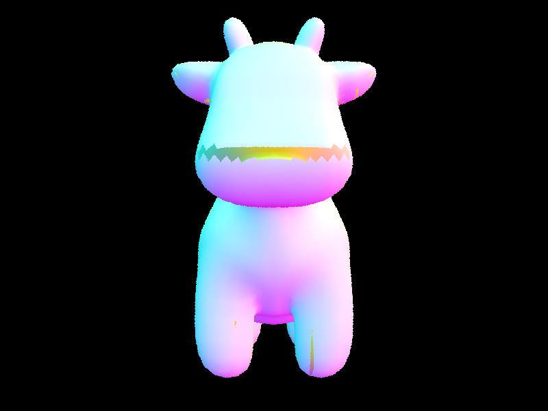 |
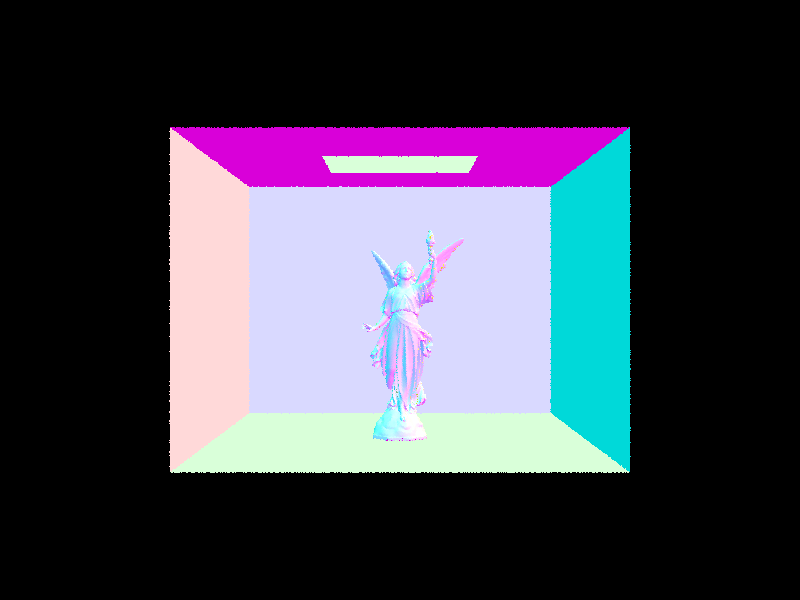 |
Performance Analysis
The difference in render times with and without the BVH is insane. For the cow.dae file it went from taking about 40 seconds to render down to 0.141 seconds which is a huge jump. When I tried rendering even bigger files without the BVH it felt like the program just froze because it was doing so much O(n) work for every single ray. Using the BVH turns the complexity into O(log n) so as the scenes get more complex the render time doesnt explode anymore and it stays pretty fast even for meshes with thousands of triangles. The Angel image took around 45 seconds before and 0.285 after.
Part 3: Direct Illumination
In this part I implemented two ways to calculate direct lighting. The first is Uniform Hemisphere Sampling. For this one we just pick a bunch of random directions in a hemisphere around the hit point and check if those rays hit a light source. If they do we add that light to the pixel. It's basically a brute force way of seeing where the light is coming from.
The second way is Importance Sampling. Instead of looking in random directions we just look directly at the lights in the scene. We loop through all the light sources and sample them. If there isnt an object in the way (we check this with a shadow ray) we add the light. This is way more efficient because we arent wasting rays looking at dark walls when we could be looking at the light bulb.
Uniform Hemisphere vs. Importance Sampling
|
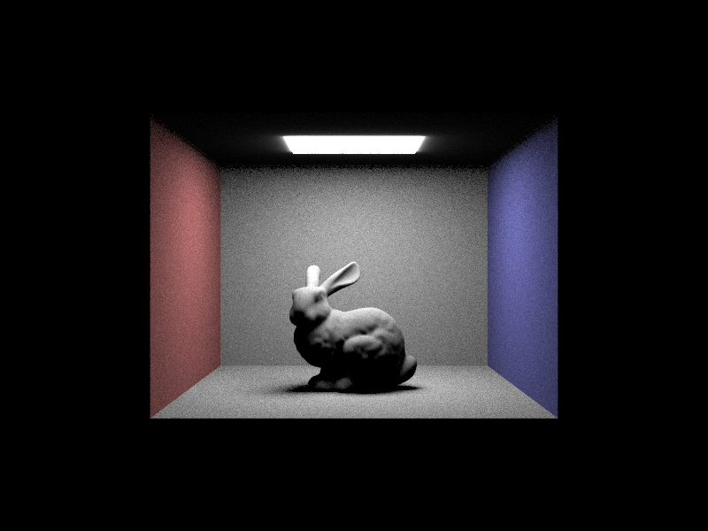 |
|
Shadow Noise with Different Light Ray Counts
These images show how the noise in the soft shadows goes away as we increase the number of light rays (-l flag) while keeping the samples per pixel at 1.
|
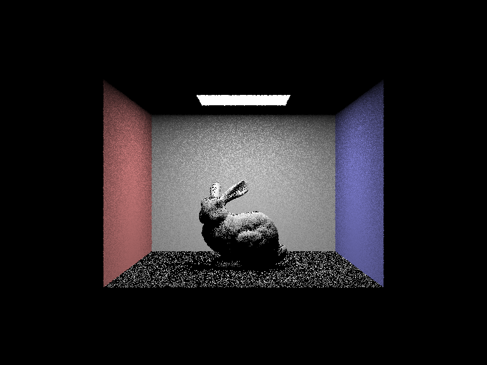 |
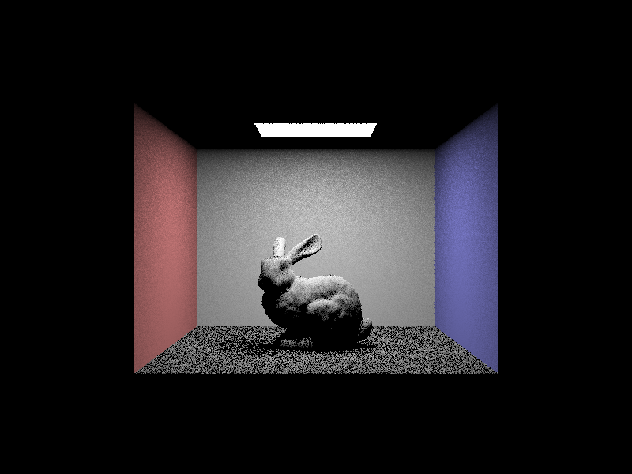 |
|
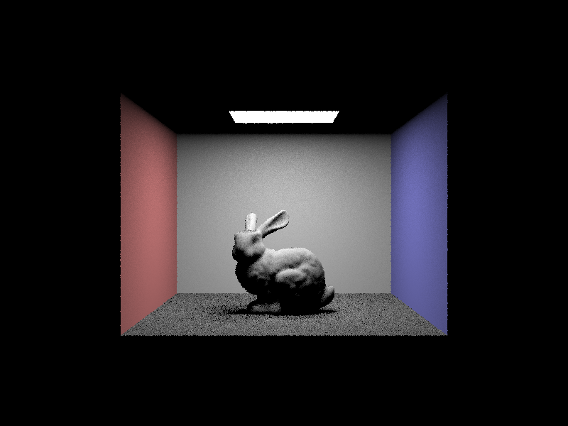 |
|
Analysis
Comparing the two methods you can really see why importance sampling is better. Uniform hemisphere sampling is super noisy because most of the rays we fire just hit the ceiling or the walls and dont contribute any light. You would need a ton of samples per pixel to make it look good. Importance sampling is way cleaner because every ray we fire actually goes toward a light source so we get a lot more information with fewer rays. It also lets us use point lights which wouldnt even show up in hemisphere sampling because the chance of a random ray hitting a single point is basically zero.
Part 4: Global Illumination
In this part I implemented at_least_one_bounce_radiance to handle indirect lighting. This function is recursive because to find the light hitting a point we have to look at where that light came from which might be another surface in the scene. I used Russian Roulette to decide when to stop the rays. This makes sure the rays dont bounce forever but the math stays unbiased because we divide by the survival probability.
Direct vs. Indirect Illumination
Here is the bunny rendered with only direct light versus only indirect light. You can see the direct version has black shadows and a black ceiling because the light hasnt bounced yet. The indirect version shows the light that bounced off the floor and walls to light up the rest of the room.
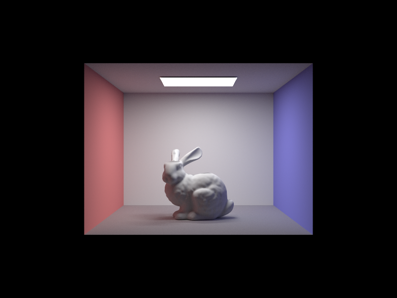 |
Accumulated Bounces (m=0 to m=5)
As I increased the max_ray_depth the scene got much brighter. At m=0 we only see the light source itself. At m=1 we see the boxes but the shadows and ceiling are black. By m=2 and m=3 the ceiling finally lights up because light is bouncing off the floor and hitting it. Higher bounces add subtle color bleeding from the red and blue walls onto the white surfaces.
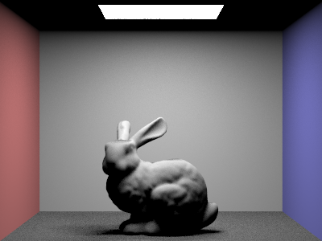 |
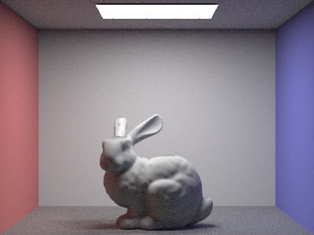 |
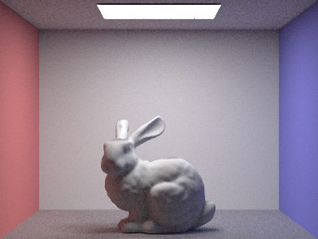 |
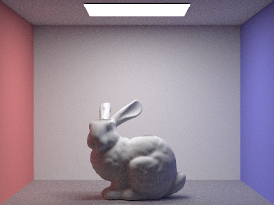 |
Sample Rate Comparison
Since we are using random sampling the image starts out very noisy. At 1 sample per pixel it looks like static. As we increase to 1024 samples the noise clears up and the soft global illumination effects like smooth shadows and color bleeding become very clear.
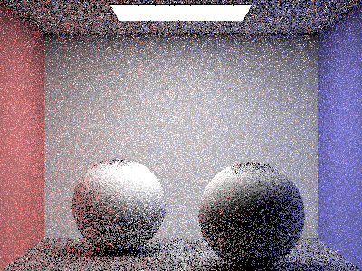 |
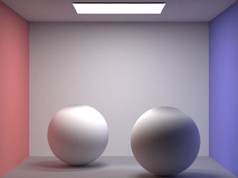 |
Part 5: Adaptive Sampling
The final part of the project was Adaptive Sampling. The problem with standard path tracing is that we waste a lot of time on pixels that are already smooth while other pixels are still noisy. My implementation tracks the mean and variance of the illuminance every 32 samples. If the 95% confidence interval is small enough relative to the mean, I assume the pixel has converged and stop sampling.
Adaptive Bunny and Sampling Rate
Here is the bunny rendered with a max of 2048 samples. In the sampling rate image, red represents high sampling counts and blue represents areas that converged quickly. You can see that the shadows and edges of the bunny needed more samples while the flat walls and the open floor were finished much faster.
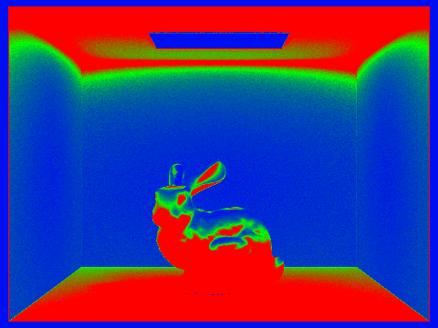 |
Part 6: Extra Credit
1. Iterative BVH Traversal
I optimized the ray scene intersection engine by replacing the default recursive BVH traversal with an Iterative Stack-based approach.
Method: By using std::stack, I eliminated the overhead of recursive function calls. The algorithm manually manages the traversal, pushing child nodes onto the stack and pruning branches early if the ray misses the bounding box or if the intersection point is already further than the current max_t.
Results: This optimization increased the rendering throughput (Rays/sec) by roughly a small amount across various scenes, it was mostly good at reducing the time required for high-sample-rate renders, likely because for higher samples there were more recursive calls, and the recursive stack was bigger.
2. Jittered (Stratified) Pixel Sampling
To improve image quality at lower sample rates, I implemented Jittered Sampling in the pixel integrator.
Method: Instead of picking ns_aa random points within a pixel, I divided the pixel into an sqrt(ns_aa) by sqrt(ns_aa) grid. For each grid cell, I took exactly one sample with a random jittered offset.
Results: This technique allowed fors a more uniform distribution of samples across the pixel area, preventing the clumping that comes with with pure Monte Carlo sampling.The high frequency noise in soft shadows and reflections is much more evenly distributed, making the image appear smoother and more visually pleasing at lower sample counts.
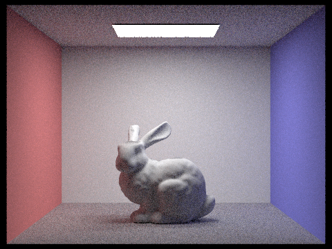 |
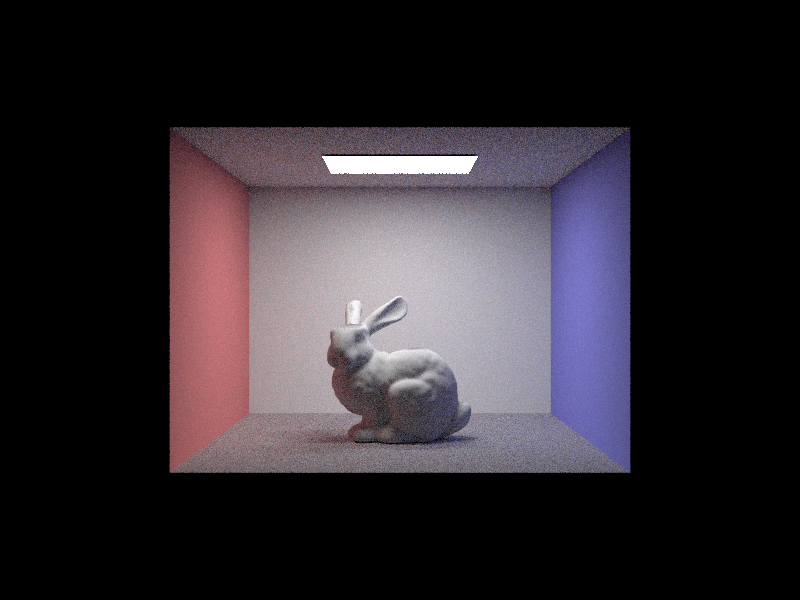 |